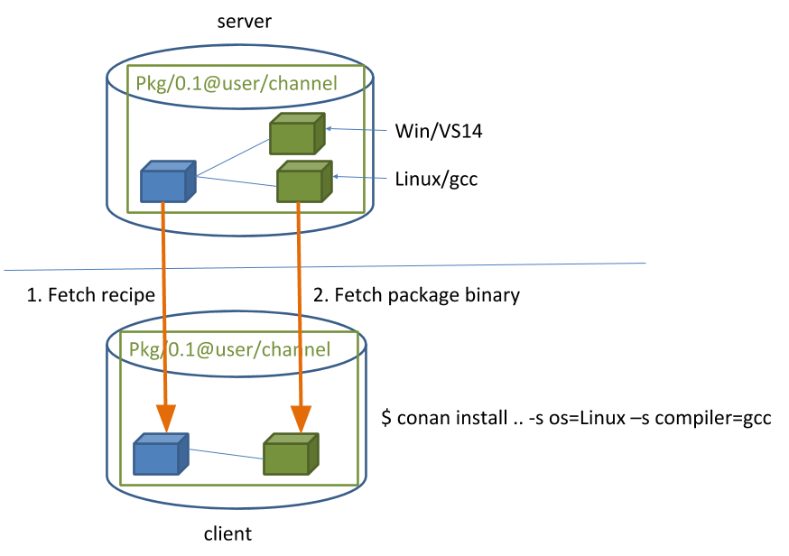

Getting Started¶
Let’s get started with an example: We are going to create an MD5 encrypter app that uses one of the most popular C++ libraries: Poco.
We’ll use CMake as build system in this case but keep in mind that Conan works with any build system and is not limited to using CMake.
An MD5 Encrypter using the Poco Libraries¶
Note
The source files to recreate this project are available in the example repository in GitHub. You can skip the manual creation of the folder and sources with this command:
$ git clone https://github.com/conan-io/examples.git && cd examples/libraries/poco/md5
Create the following source file inside a folder. This will be the source file of our application:
md5.cpp¶#include "Poco/MD5Engine.h" #include "Poco/DigestStream.h" #include <iostream> int main(int argc, char** argv) { Poco::MD5Engine md5; Poco::DigestOutputStream ds(md5); ds << "abcdefghijklmnopqrstuvwxyz"; ds.close(); std::cout << Poco::DigestEngine::digestToHex(md5.digest()) << std::endl; return 0; }
We know that our application relies on the Poco libraries. Let’s look for it in the Conan Center remote:
$ conan search Poco --remote=conan-center Existing package recipes: Poco/1.7.8p3@pocoproject/stable Poco/1.7.9@pocoproject/stable Poco/1.7.9p1@pocoproject/stable Poco/1.7.9p2@pocoproject/stable Poco/1.8.0.1@pocoproject/stable Poco/1.8.0@pocoproject/stable Poco/1.8.1@pocoproject/stable Poco/1.9.0@pocoproject/stable Poco/1.9.1@pocoproject/stable Poco/1.9.2@pocoproject/stableWe got some interesting references for Poco. Let’s inspect the metadata of the 1.9.0 version:
$ conan inspect Poco/1.9.0@pocoproject/stable ... name: Poco version: 1.9.0 url: http://github.com/pocoproject/conan-poco license: The Boost Software License 1.0 author: None description: Modern, powerful open source C++ class libraries for building network- and internet-based applications that run on desktop, server, mobile and embedded systems. generators: ('cmake', 'txt') exports: None exports_sources: ('CMakeLists.txt', 'PocoMacros.cmake') short_paths: False apply_env: True build_policy: None settings: ('os', 'arch', 'compiler', 'build_type') options: enable_apacheconnector: [True, False] shared: [True, False] default_options: enable_apacheconnector: False shared: False
Ok, it looks like this dependency could work with our Encrypter app. We should indicate which are the requirements and the generator for our build system. Let’s create a conanfile.txt inside our project’s folder with the following content:
conanfile.txt¶[requires] Poco/1.9.0@pocoproject/stable [generators] cmake
In this example we are using CMake to build the project, which is why the
cmakegenerator is specified. This generator creates a conanbuildinfo.cmake file that defines CMake variables including paths and library names that can be used in our build. Read more about Generators.Next step: We are going to install the required dependencies and generate the information for the build system:
Important
If you are using GCC compiler >= 5.1, Conan will set the
compiler.libcxxto the old ABI for backwards compatibility. You can change this with the following commands:$ conan profile new default --detect # Generates default profile detecting GCC and sets old ABI $ conan profile update settings.compiler.libcxx=libstdc++11 default # Sets libcxx to C++11 ABI
You will find more information in How to manage the GCC >= 5 ABI.
$ mkdir build && cd build $ conan install .. ... Requirements OpenSSL/1.0.2o@conan/stable from 'conan-center' - Downloaded Poco/1.9.0@pocoproject/stable from 'conan-center' - Cache zlib/1.2.11@conan/stable from 'conan-center' - Downloaded Packages OpenSSL/1.0.2o@conan/stable:606fdb601e335c2001bdf31d478826b644747077 - Download Poco/1.9.0@pocoproject/stable:09378ed7f51185386e9f04b212b79fe2d12d005c - Download zlib/1.2.11@conan/stable:6cc50b139b9c3d27b3e9042d5f5372d327b3a9f7 - Download zlib/1.2.11@conan/stable: Retrieving package 6cc50b139b9c3d27b3e9042d5f5372d327b3a9f7 from remote 'conan-center' ... Downloading conan_package.tgz [==================================================] 99.8KB/99.8KB ... zlib/1.2.11@conan/stable: Package installed 6cc50b139b9c3d27b3e9042d5f5372d327b3a9f7 OpenSSL/1.0.2o@conan/stable: Retrieving package 606fdb601e335c2001bdf31d478826b644747077 from remote 'conan-center' ... Downloading conan_package.tgz [==================================================] 5.5MB/5.5MB ... OpenSSL/1.0.2o@conan/stable: Package installed 606fdb601e335c2001bdf31d478826b644747077 Poco/1.9.0@pocoproject/stable: Retrieving package 09378ed7f51185386e9f04b212b79fe2d12d005c from remote 'conan-center' ... Downloading conan_package.tgz [==================================================] 11.5MB/11.5MB ... Poco/1.9.0@pocoproject/stable: Package installed 09378ed7f51185386e9f04b212b79fe2d12d005c PROJECT: Generator cmake created conanbuildinfo.cmake PROJECT: Generator txt created conanbuildinfo.txt PROJECT: Generated conaninfo.txt
Conan installed our Poco dependency but also the transitive dependencies for it: OpenSSL and zlib. It has also generated a conanbuildinfo.cmake file for our build system.
Now let’s create our build file. To inject the Conan information, include the generated conanbuildinfo.cmake file like this:
CMakeLists.txt¶cmake_minimum_required(VERSION 2.8.12) project(MD5Encrypter) add_definitions("-std=c++11") include(${CMAKE_BINARY_DIR}/conanbuildinfo.cmake) conan_basic_setup() add_executable(md5 md5.cpp) target_link_libraries(md5 ${CONAN_LIBS})
Now we are ready to build and run our Encrypter app:
(win) $ cmake .. -G "Visual Studio 15 Win64" $ cmake --build . --config Release (linux, mac) $ cmake .. -G "Unix Makefiles" -DCMAKE_BUILD_TYPE=Release $ cmake --build . ... [100%] Built target md5 $ ./bin/md5 c3fcd3d76192e4007dfb496cca67e13b
Installing Dependencies¶
The conan install command downloads the binary package required for your configuration (detected the first time you ran the command), together with other (transitively required by Poco) libraries, like OpenSSL and Zlib. It will also create the conanbuildinfo.cmake file in the current directory, in which you can see the CMake variables, and a conaninfo.txt in which the settings, requirements and optional information is saved.
Note
Conan generates a default profile with your detected settings (OS, compiler, architecture…) and that configuration is printed at the top of every conan install command. However, it is strongly recommended to review it and adjust the settings to accurately describe your system as shown in the Building with Other Configurations section.
It is very important to understand the installation process. When the conan install command runs, settings specified on the command line or taken from the defaults in <userhome>/.conan/profiles/default file are applied.
{kind=link}
For example, the command conan install .. --settings os="Linux" --settings compiler="gcc", performs these steps:
- Checks if the package recipe (for
Poco/1.9.0@pocoproject/stablepackage) exists in the local cache. If we are just starting, the cache is empty. - Looks for the package recipe in the defined remotes. Conan comes with conan-center Bintray remote as the default, but can be changed.
- If the recipe exists, the Conan client fetches and stores it in your local cache.
- With the package recipe and the input settings (Linux, GCC), Conan looks for the corresponding binary in the local cache.
- Then Conan searches the corresponding binary package in the remote and fetches it.
- Finally, it generates an appropriate file for the build system specified in the
[generators]section.
There are binaries for several mainstream compilers and versions available in Conan Center repository in Bintray, such as Visual Studio 14, 15, Linux GCC 4.9 and Apple Clang 3.5… Conan will throw an error if the binary package required for specific settings doesn’t exist. You can build the binary package from sources using conan install .. --build=missing, it will succeed if your configuration is supported by the recipe. You will find more info in the Building with Other Configurations section.
Inspecting Dependencies¶
The retrieved packages are installed to your local user cache (typically .conan/data), and can be reused from this location for other projects. This allows to clean your current project and continue working even without network connection. To search for packages in the local cache run:
$ conan search "*"
Existing package recipes:
OpenSSL/1.0.2o@conan/stable
Poco/1.9.0@pocoproject/stable
zlib/1.2.11@conan/stable
To inspect the different binary packages of a reference run:
$ conan search Poco/1.9.0@pocoproject/stable
Existing packages for recipe Poco/1.9.0@pocoproject/stable:
Package_ID: 09378ed7f51185386e9f04b212b79fe2d12d005c
[options]
cxx_14: False
enable_apacheconnector: False
enable_cppparser: False
enable_crypto: True
enable_data: True
...
There is also the possibility to generate a table for all package binaries available in a remote:
$ conan search zlib/1.2.11@conan/stable --table=file.html -r=conan-center
$ file.html # or open the file, double-click
{kind=link}
To inspect all your current project’s dependencies use the conan info command by pointing it to the location of the conanfile.txt folder:
$ conan info ..
PROJECT
ID: 6ecacba4f2b7535e0acb633a0cc4de0234445fea
BuildID: None
Requires:
Poco/1.9.0@pocoproject/stable
OpenSSL/1.0.2o@conan/stable
ID: 606fdb601e335c2001bdf31d478826b644747077
BuildID: None
Remote: conan-center=https://conan.bintray.com
URL: http://github.com/conan-community/conan-openssl
License: The current OpenSSL licence is an 'Apache style' license: https://www.openssl.org/source/license.html
Recipe: Cache
Binary: Cache
Binary remote: conan-center
Creation date: 2018-08-27 09:12:47
Required by:
Poco/1.9.0@pocoproject/stable
Requires:
zlib/1.2.11@conan/stable
Poco/1.9.0@pocoproject/stable
ID: 09378ed7f51185386e9f04b212b79fe2d12d005c
BuildID: None
Remote: conan-center=https://conan.bintray.com
URL: http://github.com/pocoproject/conan-poco
License: The Boost Software License 1.0
Recipe: Cache
Binary: Cache
Binary remote: conan-center
Creation date: 2018-08-30 13:28:08
Required by:
PROJECT
Requires:
OpenSSL/1.0.2o@conan/stable
zlib/1.2.11@conan/stable
ID: 6cc50b139b9c3d27b3e9042d5f5372d327b3a9f7
BuildID: None
Remote: conan-center=https://conan.bintray.com
URL: http://github.com/conan-community/conan-zlib
License: Zlib
Recipe: Cache
Binary: Cache
Binary remote: conan-center
Creation date: 2018-10-24 12:40:49
Required by:
OpenSSL/1.0.2o@conan/stable
Or generate a graph of your dependencies using Dot or HTML formats:
$ conan info .. --graph=file.html
$ file.html # or open the file, double-click
{kind=link}
Searching Packages¶
The remote repository where packages are installed from is configured by default in Conan. It is called Conan Center (configured as conan-center remote) and it is located in Bintray.
You can search packages in Conan Center using this command:
$ conan search "*" --remote=conan-center
Existing package recipes:
Assimp/4.1.0@jacmoe/stable
CLI11/1.6.1@cliutils/stable
CTRE/2.1@ctre/stable
Catch/1.12.1@bincrafters/stable
Expat/2.2.5@pix4d/stable
FakeIt/2.0.5@gasuketsu/stable
IlmBase/2.2.0@Mikayex/stable
IrrXML/1.2@conan/stable
OpenSSL/1.0.2@conan/stable
...
There are additional community repositories that can be configured and used. See Bintray Repositories for more information.
Building with Other Configurations¶
In this example, we have built our project using the default configuration detected by Conan. This configuration is known as the default profile.
A profile needs to be available prior to running commands such as conan install. When running the command, your settings are automatically detected (compiler, architecture…) and stored as the default profile. You can edit these settings ~/.conan/profiles/default or create new profiles with your desired configuration.
For example, if we have a profile with a 32-bit GCC configuration in a profile called gcc_x86, we can run the following:
$ conan install .. --profile=gcc_x86
Tip
We strongly recommend using Profiles and managing them with conan config install.
However, the user can always override the profile settings in the conan install command using the --settings parameter. As an exercise, try building the 32-bit version of the Encrypter project like this:
$ conan install .. --settings arch=x86
The above command installs a different package, using the --settings arch=x86 instead of the one of the default profile used previously.
To use the 32-bit binaries, you will also have to change your project build:
- In Windows, change the CMake invocation to
Visual Studio 14. - In Linux, you have to add the
-m32flag to yourCMakeLists.txtby runningSET(CMAKE_CXX_FLAGS "${CMAKE_CXX_FLAGS} -m32"), and the same applies toCMAKE_C_FLAGS, CMAKE_SHARED_LINK_FLAGS and CMAKE_EXE_LINKER_FLAGS. This can also be done more easily, by automatically using Conan, as we’ll show later. - In macOS, you need to add the definition
-DCMAKE_OSX_ARCHITECTURES=i386.
Got any doubts? Check our FAQ, write us or join the community in Cpplang Slack #conan channel!